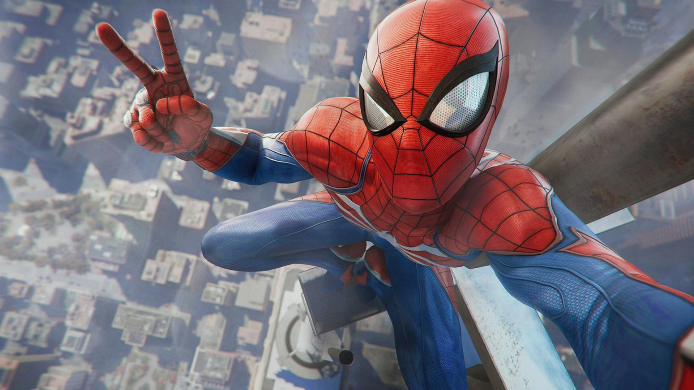
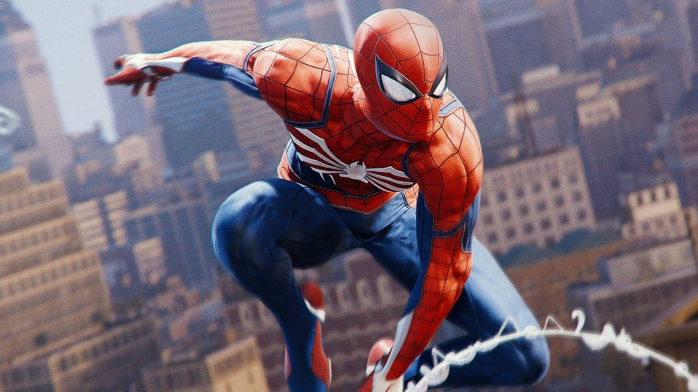
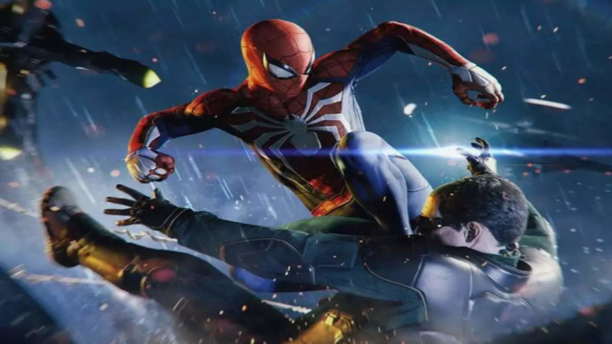
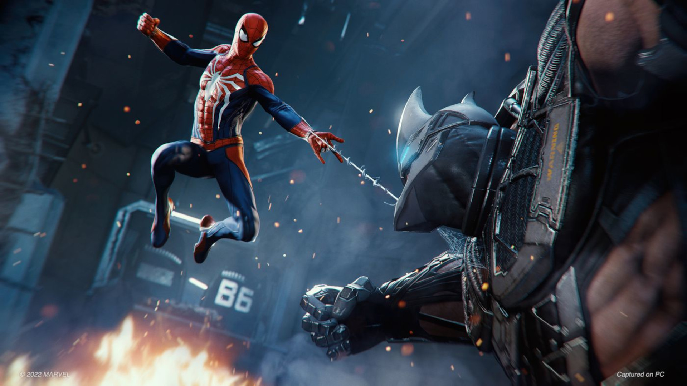
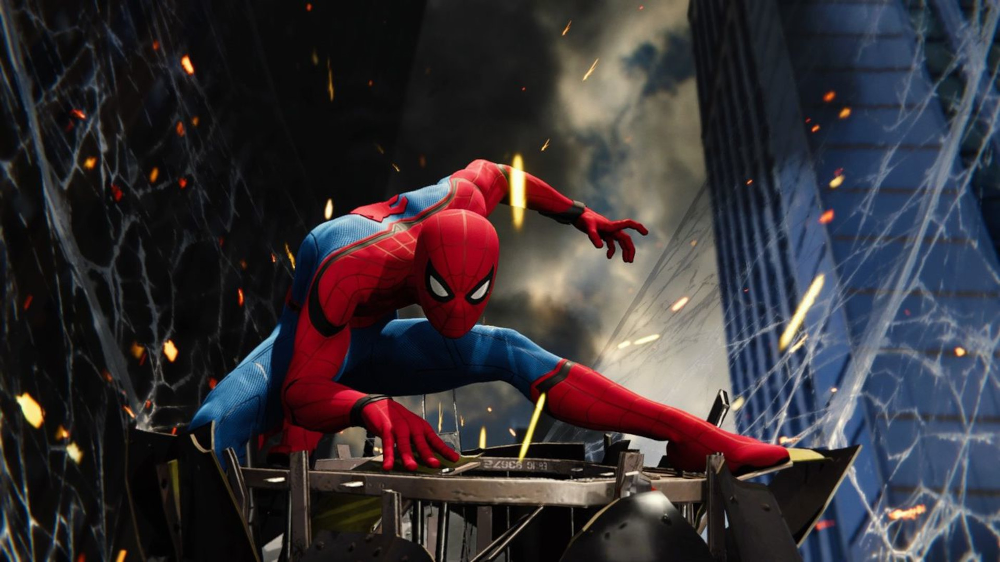
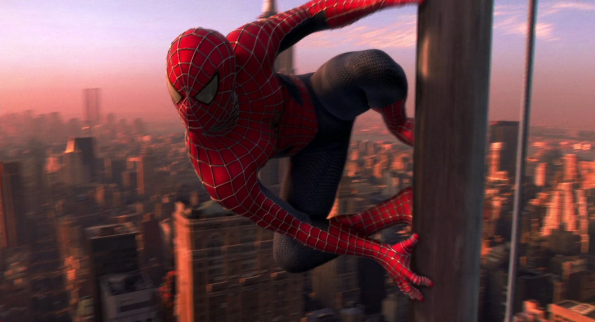

O Homem-Aranha, o Peter Parker, é um super-herói que aparece nas revistas em quadrinhos publicadas pela Marvel Comics. Para combater seus inimigos, os criadores deram-lhe superforça e superagilidade, a capacidade de aderir na maioria das superfícies, a habilidade de disparar teias de aranha através de mecanismos montados nos pulsos (inventados por ele próprio e batizados de "lança-teia" — web-shooters) e a reação precognitiva ao perigo chamada "sentido-aranha" (spider-sense). Peter Parker adquiriu seus poderes após ter sido picado por uma aranha radioativa.